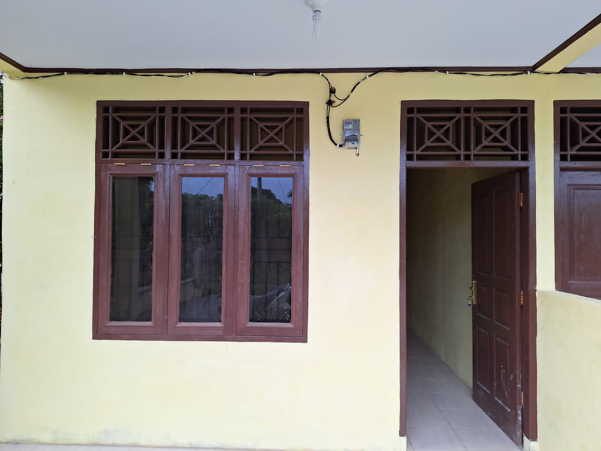
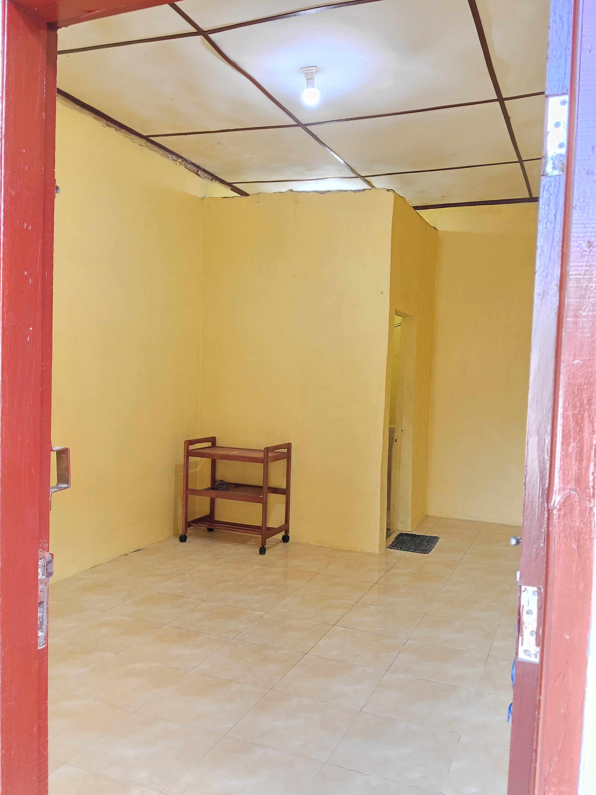
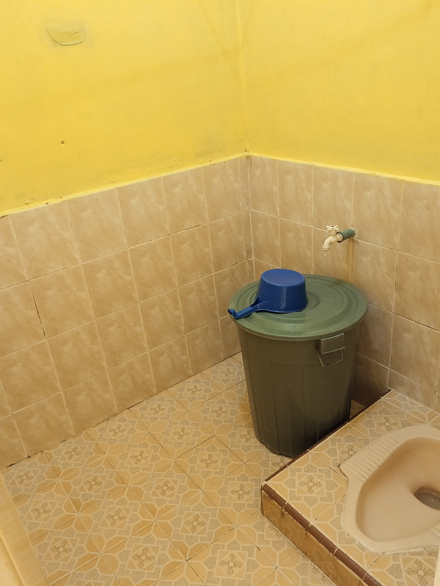
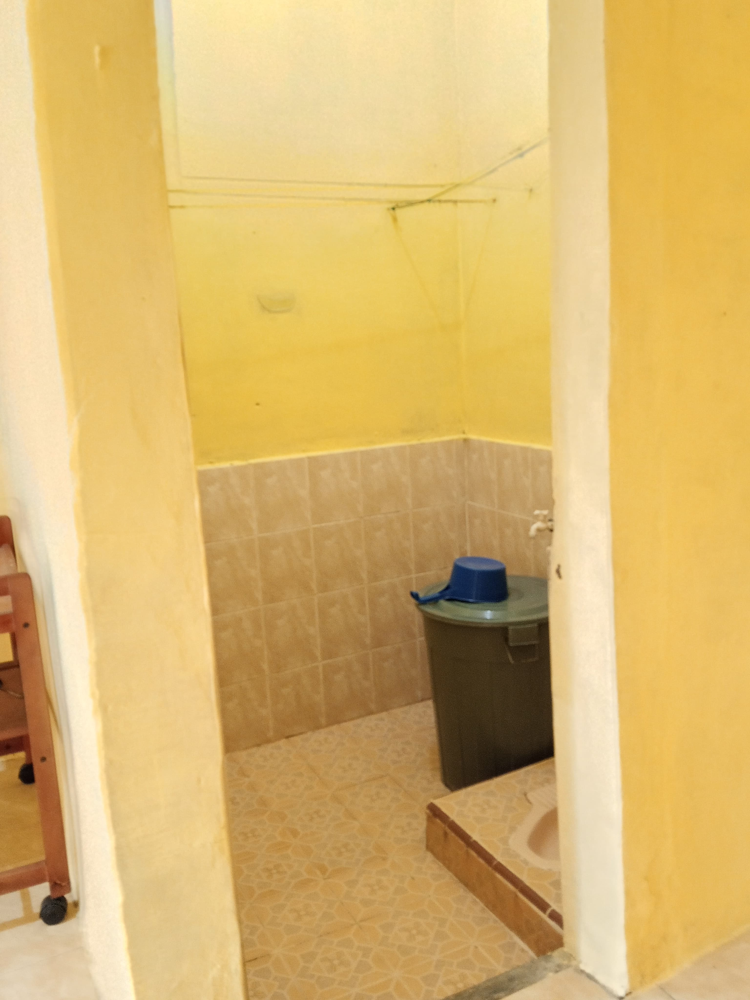
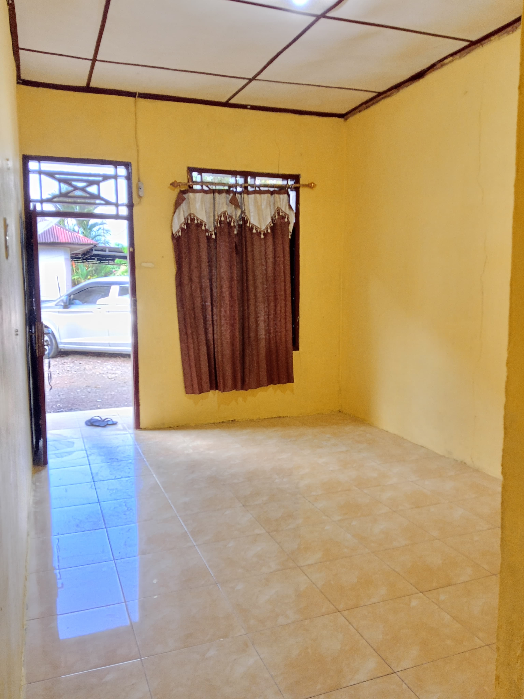
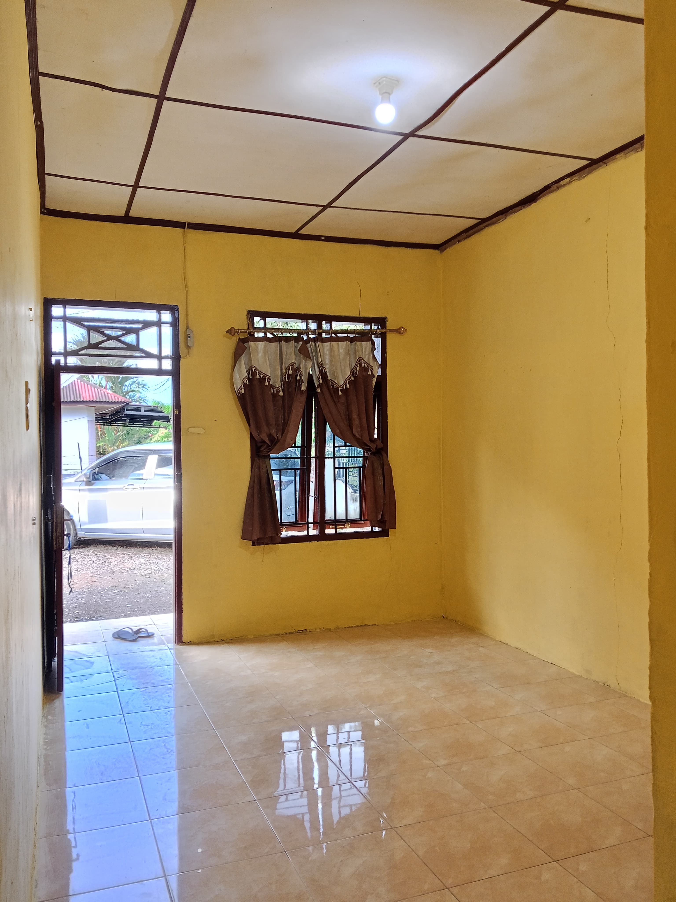
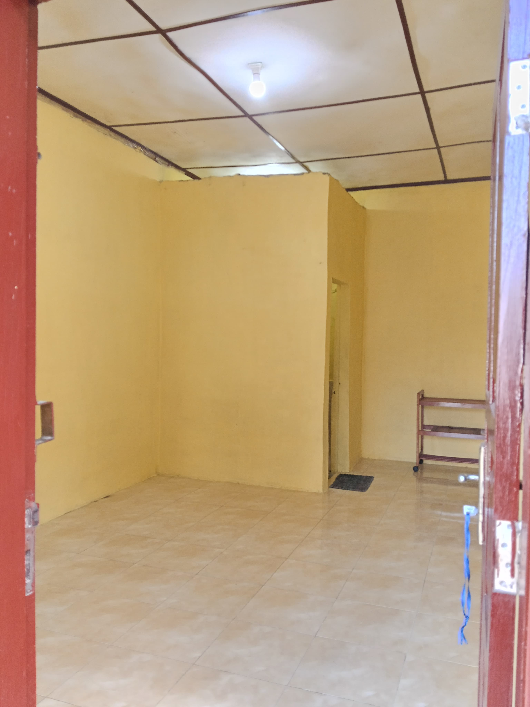
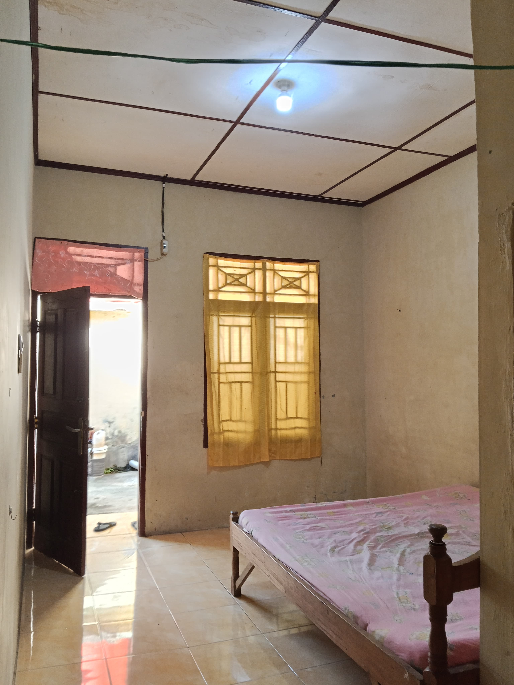
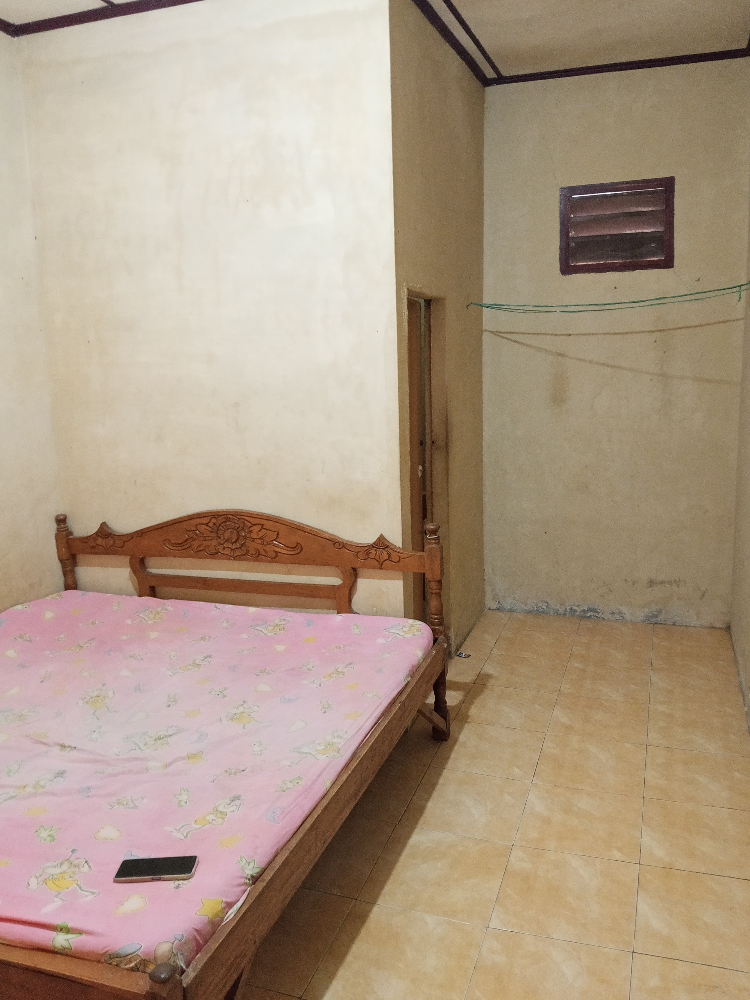

Sibuhuan · Padang Lawas · Sumatera Utara
Kos di Sibuhuan yang nyaman untuk pelajar, mahasiswa, & profesional
Mencari kos atau kontrakan di Sibuhuan? Kos Hafiz Ikpos menawarkan hunian bersih, aman, dan strategis — dekat sekolah, perkantoran, dan jalan utama.
Nuansa rumah, bukan sekadar kamar kosong
Kos Hafiz Ikpos menjadi pilihan mahasiswa dan pekerja yang butuh tempat tinggal di Sibuhuan — bersih, tenang, dan dikelola dengan responsif untuk kebutuhan jangka panjang.
Lokasinya strategis, hanya beberapa menit ke MAN 1 Sibuhuan, kantor pemerintahan, dan bank. Setiap area dijaga kebersihannya, dengan prioritas keamanan agar kamu bisa fokus belajar dan bekerja.
- ✓Lingkungan tenang & bersih
- ✓Dekat sekolah, kantor & bank
- ✓Pengelola responsif via WhatsApp

Fasilitas untuk penghuni
Semua yang kamu butuhkan untuk aktivitas harian — dari keamanan sampai istirahat yang berkualitas.
Keamanan
Sistem keamanan terpadu agar kamu tenang tinggal di lingkungan kos.
Air bersih
Pasokan air untuk kebutuhan mandi dan kebersihan sehari-hari.
Listrik
Instalasi listrik yang memadai untuk aktivitas dan pengisian daya.
Parkir
Area parkir untuk kendaraan penghuni, motor maupun mobil.
Tempat tidur
Perlengkapan tidur yang nyaman untuk istirahat berkualitas.
Kamar mandi dalam
Privasi dan kenyamanan mandi di kamarmu sendiri.
AC
Unit AC sedang dipersiapkan untuk kenyamanan suhu ruangan.
Segera hadirWiFi fiber
Internet fiber sedang dalam proses instalasi.
Segera hadirGaleri Kos Hafiz Ikpos
Lihat lebih dekat suasana, fasilitas, dan kenyamanan huniannya.








Lokasi mudah ditemukan
Bertempat di jantung Sibuhuan — ideal untuk kamu yang mencari kontrakan di Padang Lawas.
Alamat lengkap
Jl. Kol. H. M. Nurdin (Ikpos Padang Luar), Sibuhuan — samping Kantor Pengadilan Lama, depan MAN 1 Sibuhuan.
- Dekat sekolah & kampus — jarak singkat ke MAN 1 dan institusi pendidikan lain.
- Kantor & perbankan — akses cepat ke layanan pemerintahan dan bank di pusat kota.
Cari di Google Maps
Ketuk tombol di bawah untuk membuka titik lokasi "Kos dan Kontrakan Hafiz Ikpos" di Google Maps.
Sering ditanyakan
Di Jl. Kol. H. M. Nurdin (Ikpos Padang Luar), samping Kantor Pengadilan Lama dan depan MAN 1 Padang Lawas. Mudah dicari di Google Maps dengan nama "Kos dan Kontrakan Hafiz Ikpos".
Harga sewa sangat terjangkau, dengan opsi kamar mandi dalam. Hubungi WhatsApp resmi +62 851-6308-9473 untuk info harga terbaru dan ketersediaan kamar.
Hubungi nomor WhatsApp resmi untuk menanyakan ketersediaan kamar, harga, dan jadwal kunjungan ke lokasi.
Ya. Lokasi dekat sekolah dan pusat kota, cocok untuk mahasiswa serta profesional yang butuh hunian di wilayah Sibuhuan.
Gunakan hanya nomor WhatsApp resmi yang tertera di situs ini. Kami tidak meminta DP via transfer ke rekening yang tidak dikonfirmasi.
Kamar terbatas — amankan lebih awal
Konfirmasi ketersediaan kamar langsung via WhatsApp resmi. Kami siap membantu setiap hari.